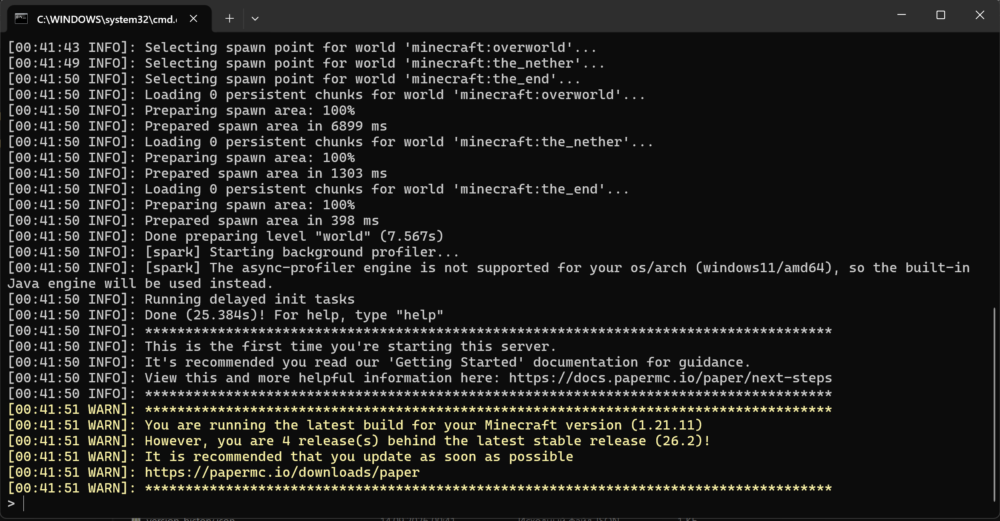

How to Install PaperMC Server
Follow these steps to run a Minecraft server on your local PC:
- Download and install Java 21 on your computer
- Download paper from the official website
- Create a new folder and place the
paper.jarfile inside it. - Create a text file named
run.batand add this command:java -jar paper.jar - Run
run.batonce, openeula.txt, and change it toeula=true - Run
run.batagain and wait until the world generation is finished
Run Script Example (run.bat)
Create a batch file with the following startup flags:
java -Xms2G -Xmx4G -jar paper.jar nogui
pause
